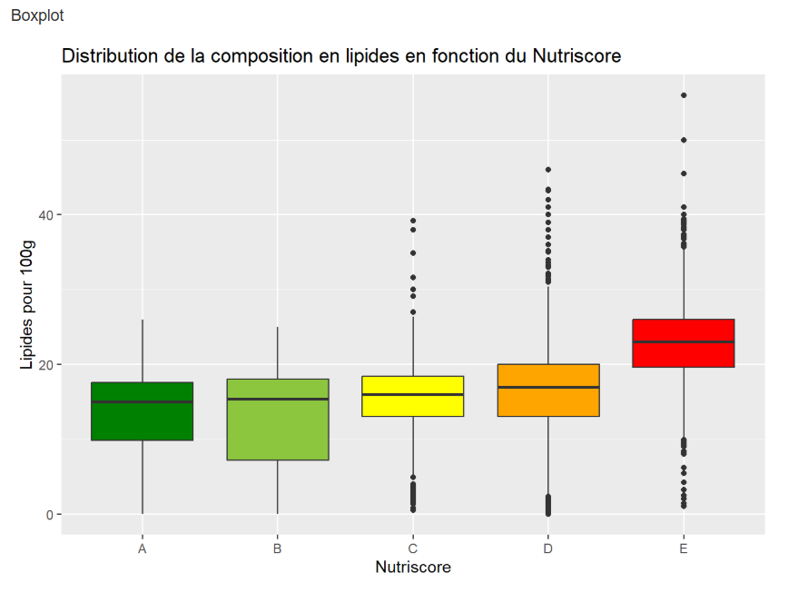

Analyse de Données - Nutriscore
Description
Projet d'analyse des données de macro et micronutriments des biscuits et gateaux vendu en France en lien avec leur nutriscore, à partir d'une base disponible en opendata et renseignée par des contributions libres (Open Food Facts). Le projet implique le tri, la sélection et l'analyse de grandes quantités de données, avec production de graphiques pour répondre à cette problématique.
(projet réalisé en deuxième semestre de BUT informatique)
Objectifs
- Extraire et filtrer les données concernant uniquement les biscuits et gateaux en France
- Créer des visualisations claires et significatives à partir de ces données qui répondent au sujet
- Identifier et analyser les tendances de ces données nutritionnelles
- Rédiger un rapport détaillé présentant les résultats de l'analyse et les conclusions tirées
Compétences Utilisées
Travail en Équipe
Ce projet a été réalisé en binôme avec un autre étudiant de première année. Nous avons partagé les responsabilités : la stratégie d'extraction et de nettoyage des données a été définie ensemble, avec une répartition des tâches pour l'écriture des requêtes SQL et le développement des scripts R pour les visualisations. Nous avons partgé nos analyses pour interpréter les résultats et rédiger le rapport final.
Travail Individuel
J'ai principalement travaillé sur les requêtes PostgreSQL pour l'extraction et le nettoyage des données. J'ai également développé les scripts R de 2 des 4 graphiques à réaliser ainsi que leur analyse et rédigé ma part du rapport final.
Techniques et Savoirs-Faire Acquis
- Écriture de requêtes SQL complexes sous PostgreSQL.
- Extraire et filtrer de données à partir d'une base de données volumineuse.
- Créer des visualisations de données avec R.
- Interpréter des résultats statistiques et en tirer des conclusions.